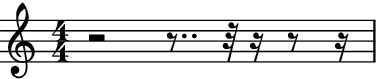
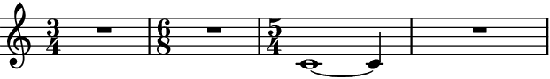
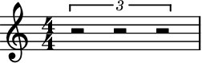
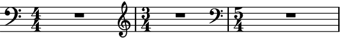
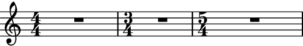

rests_to_multimeasure_rest¶
- auxjad.mutate.rests_to_multimeasure_rest(selection: abjad.select.Selection, *, ignore_clefs: bool = False) → None[source]¶
Mutates an input
abjad.Selectionin place and has no return value; this function looks for measures filled with regular rests and converts them into anabjad.MultimeasureRest.- Basic usage:
Converts any measure filled with regular rests into a measure with a single multi-measure rest.
>>> container = abjad.Container(r"r1") >>> auxjad.mutate.rests_to_multimeasure_rest(container[:]) >>> abjad.show(container)

Note
Auxjad automatically adds this function as an extension function to
abjad.mutate. It can thus be used from eitherauxjad.mutateorabjad.mutatenamespaces. Therefore, the two lines below are equivalent:>>> auxjad.mutate.rests_to_multimeasure_rest(staff[:]) >>> abjad.mutate.rests_to_multimeasure_rest(staff[:])
- Multiple rests:
Works with measures with multiple regular rests.
>>> container = abjad.Container(r"r2 r8.. r32 r16 r8 r16") >>> abjad.show(container)
>>> auxjad.mutate.rests_to_multimeasure_rest(container[:]) >>> abjad.show(container)

Note
When using
abjad.Container’s, all time signatures in the output will be commented out with%%%.This is because Abjad only applies time signatures to containers that belong to aabjad.Staff. The present function works with eitherabjad.Containerandabjad.Staff.>>> container = abjad.Container(r"\time 3/4 c'4 d'4 e'4") >>> abjad.show(container)

>>> staff = abjad.Staff([container]) >>> abjad.show(container)

- Time signature changes:
Works with selections from containers with multiple time signatures as well as notes.
>>> container = abjad.Staff(r"\time 3/4 r2. | " ... "\time 6/8 r2. | " ... "\time 5/4 c'1 ~ c'4 | r1 r4" ... ) >>> auxjad.mutate.rests_to_multimeasure_rest(container[:]) >>> abjad.show(container)
- Tuplets:
Works with containers with tuplets.
>>> container = abjad.Container(r"\times 2/3 {r2 r2 r2}") >>> abjad.show(container)
>>> auxjad.mutate.rests_to_multimeasure_rest(container[:]) >>> abjad.show(container)

It also works with containers with tuplets within tuplets.
>>> container = abjad.Container( ... r"r2 \times 2/3 {r2 r4} \times 4/5 {r2. \times 2/3 {r2 r4}}" ... ) >>> abjad.show(container)

>>> auxjad.mutate.rests_to_multimeasure_rest(container[:]) >>> abjad.show(container)

ignore_clefsBy default, the last clef of an empty measure is preserved when replacing it with a multi-measure rest:
>>> staff = abjad.Staff(r"\clef bass r4 r4 \times 2/3 {r4 r8} r4 " ... r"\time 3/4 \clef treble r2. " ... r"\time 5/4 r2 \clef bass r2." ... ) >>> abjad.show(staff)

>>> abjad.mutate.rests_to_multimeasure_rest(staff[:]) >>> abjad.show(staff)
Invoke the mutation with
ignore_clefsset toTrueto disable this behaviour and ignore all clefs:>>> staff = abjad.Staff(r"\clef bass r4 r4 \times 2/3 {r4 r8} r4 " ... r"\time 3/4 \clef treble r2. " ... r"\time 5/4 r2 \clef bass r2." ... ) >>> abjad.mutate.rests_to_multimeasure_rest( ... staff[:], ... ignore_clefs=True, ... ) >>> abjad.show(staff)

Warning
The input selection must be a contiguous logical voice. When dealing with a container with multiple subcontainers (e.g. a score containing multiple staves), the best approach is to cycle through these subcontainers, applying this function to them individually.